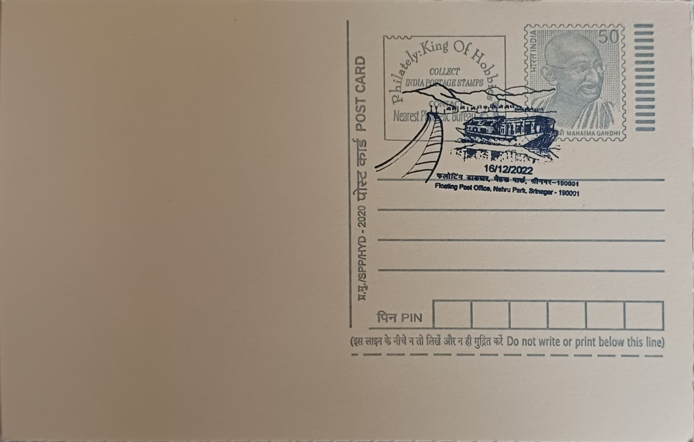

Dal Lake and Shikara
ڈل سَر تہٕ شِکارٕ


Dal Lake's name derives simply from the Kashmiri word for "lake," but its fame rests on a far older identity as the centrepiece of the Kashmir valley's water-based settlement, long predating the Mughal era with which it is now most associated. Ancient records describe a far larger water body, with the lake's extent estimated at roughly 75 square kilometres around 1200 AD, before centuries of siltation, agricultural encroachment, and urban expansion reduced it to its present form. The shikara itself has no single founding legend but evolved as the practical craft of a lake-dwelling population for whom a flat-bottomed, easily manoeuvrable boat was the only way to move people and goods across a shallow, reed-choked water surface.
As the second-largest lake in Jammu and Kashmir and the most visited water body in the Kashmir valley, Dal Lake functions simultaneously as a freshwater ecosystem, a residential habitat for tens of thousands of lake-dwellers, and the anchor of Srinagar's tourism economy. It is part of a wetland complex covering about 21 square kilometres, with the open lake itself now estimated at around 18 square kilometres, divided by causeways into four linked basins, Gagribal, Lokut Dal, Bod Dal, and Nagin. The shikara, typically twelve to eighteen feet long and propelled by one or two heart-shaped paddles, is both practical transport and a tourist-facing craft, with cushioned, canopied versions ferrying visitors between houseboats, floating markets, and the lake's shoreline gardens.
The lake's shoreline carries some of the valley's most significant Mughal-period construction, including Shalimar Bagh, whose terraced garden was laid out under Emperor Jahangir in 1619, and Nishat Bagh, built in 1633 by Asif Khan, brother of Jahangir's empress Nur Jahan. Floating cultivation, known locally as "rad," developed alongside the shikara trade as lake-dwellers anchored mats of matted vegetation and lake-bed soil to grow vegetables such as tomatoes, cucumbers, and melons directly on the water. Houseboats, now numbering roughly 900 to 1,000, trace their origin to the colonial period, when land ownership restrictions on non-Kashmiris led the British to commission elaborately carved, flat-bottomed boats as floating residences, a form that has since become as closely tied to the lake's identity as the shikara itself.
A defining episode in the lake's modern history has been the scale of its ecological decline and the repeated attempts to arrest it: a court-appointed committee examining the lake's condition warned that Dal Lake could cease to survive as a functioning water body within three decades without sustained intervention, citing untreated sewage inflow, unchecked weed growth, and encroachment by lake-dwelling settlements. A large-scale rehabilitation scheme launched in the early 2000s, budgeted at over 400 crore rupees and aimed at resettling roughly 9,000 families to the city's outskirts, managed to relocate fewer than 2,000 families over nearly two decades, prompting a rethink of the resettlement-based approach altogether.
Responsibility for the lake now rests with the J&K Lake Conservation and Management Authority, successor to the original Lakes and Waterways Development Authority formed in 1997, which has shifted toward an in-situ conservation model that treats lake-dwellers as part of the ecosystem rather than as obstacles to be removed. Recent rejuvenation drives have used self-propelled barges and mechanical weed-harvesting cranes to clear lily-pad infestation across several square kilometres of open water and have extended sewerage connections to houseboats to cut untreated discharge into the lake. The shikara trade, meanwhile, continues to be regulated through registration with the authority, with boatmen's unions negotiating fares and routes that still carry tourists past the same floating gardens and Mughal terraces that have framed the lake for four centuries.
| Date of Introduction | December 16, 2022 |
|---|---|
| Address | Senior Postmaster, |
| Srinagar GPO, | |
| Srinagar (dt.), Jammu and Kashmir - 190001. |